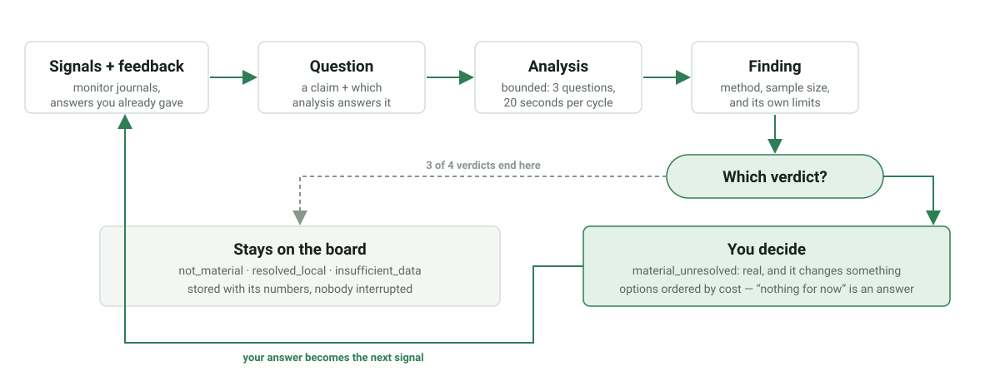
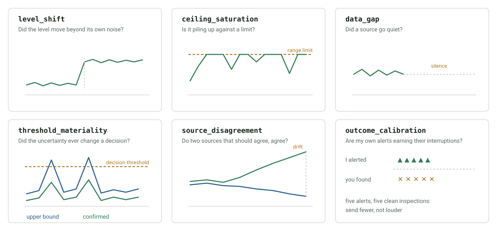

A board that samples once an hour is idle for fifty-nine minutes. Those minutes
are enough to answer questions about data already on disk. This chapter is the
engine that spends them: skills/research_agent.
It is domain-neutral. It knows about questions, analyses, findings, verdicts and watches, and nothing about what the numbers mean.
The loop

Three properties make this research rather than alerting:
- The question exists before the answer, and is stored with its provenance.
- The analysis reports what it cannot establish alongside what it can.
- A conclusion that changes no decision is a result, and stays silent.
Where questions come from
Signals. A scan reads the tail of each monitor journal and looks for shapes worth a closer look: a source that stopped reporting, a level that moved beyond its own noise, a channel piling up against a limit. The scan concludes nothing; it raises a question and hands it to an analysis.
Human feedback. Two refusals on the same subject are not stubbornness. They are evidence that the board is asking the wrong question, or asking it too often, so the engine opens a question about its own alerting threshold.
Packs. A domain declares the questions it always cares about. See chapter 8.
The shapes it looks for
Every analysis is a shape in the data. These six are the core pictures; learn them and you know most of what the board can notice on its own.

| Analysis | Question it answers |
|---|---|
level_shift |
Did the level move beyond its own noise? |
ceiling_saturation |
Is a channel piling up against a limit? |
data_gap |
Did a source go quiet? |
threshold_materiality |
Did the uncertainty ever change a decision? |
source_disagreement |
Do two sources that should agree, agree? |
outcome_calibration |
Are the board's own alerts earning their interruptions? |
neighbour_reports |
Do nearby reporters see something this board does not? |
baseline_deviation |
Is the current period unlike the periods before it? |
lagged_association |
Does one series move before another, by a fixed number of days? |
relationship_forecast |
A confirmed relationship's driver ran high — what would it imply, and when? |
coverage_gaps |
Which questions has the board framed that nothing here can measure? |
Three of these are what a networked board with a weather history is for.
neighbour_reports reads confirmed reports from other boards with their
distance and asks whether the local indicator agrees — a confirmation two
kilometres away raises the prior here and earns one cheap local check, nothing
more. source_disagreement between a weather forecast and what the station
later measured answers whether the forecast driving a risk projection can still
be trusted. baseline_deviation asks the question a person actually asks about
weather: not "is it warm" but "is this season unlike the last several".
Forming a hypothesis nobody wrote down
Everything above answers a question somebody registered. That makes the board a
scheduler for a research catalogue — useful, but not a scientist. The step
across is lagged_association: any two daily series can be paired, so the
board can propose a relationship of its own and test it.
Given hourly humidity and a disease model, it forms and answers this without a rule for it:
night humidity precedes powdery mildew risk at Camp Nord
-> material_unresolved, lag 3 days, rho 0.83, n=146
day humidity precedes powdery mildew risk -> not_material
night temperature precedes powdery mildew risk -> not_material
night humidity precedes black-rot index -> not_material
The negatives matter as much as the positive: the pattern is specific to night humidity, and a daily mean would have hidden it.
Why it does not find patterns in noise
A generator that proposes relationships will find them in randomness unless every guard pushes toward the negative:
- the test runs on first differences, so two series that merely share a seasonal trend cannot produce a result;
- the effect must persist in both halves of the record with the same sign;
- significance is corrected for the number of lags tried;
- a floor of 30 overlapping days and a minimum effect size;
- a refuted pair stays refuted and is never proposed again.
Measured: 0 false positives in 200 trials of independent noise, 100% detection of a moderate real lead. Pair discovery is budgeted at two new pairs per cycle.
It reports precedence, never causation. The question it asks is whether the driver acts on the response, or both follow something else.
Confirming is what starts a study
A pattern found in the record that produced it has been described, not confirmed. So the first option on a hypothesis is not "act on it" but "shall I test it properly?", and accepting it drafts a prospective study:
- id: study_lagged_association_1
name: "Prospective check: night humidity precedes powdery mildew risk"
status: template # the executor does not run a template
steps:
- id: measure
action: call_skill
parameters:
skill_name: research_agent
mode: investigate
question_id: 1
repeat:
interval_sec: 604800
max_iterations: 8
journal_path: /tmp/monitors/study_lagged_association_1.jsonl
Re-running the same question weekly on data collected after the hypothesis was formed is the cheapest honest experiment, and it needs no new hardware.
The draft is written as status: template, which the executor ignores.
Promoting it to pending is a human act. The board proposes an experiment; it
does not start one, and the skill name is validated and the repeat bounds
clamped before anything is written.
When it cannot test its own hypothesis
Humid nights plausibly bear on insect pressure, and this board has no insect
measurement at all. The verdict is insufficient_data naming what is missing:
humid nights precede a change in insect pressure at Camp Nord
-> insufficient_data: missing ['insect counts']
option: start recording trap counts, the only way I could ever test it
A hypothesis without evidence is stated as a hypothesis. It is not a finding, it does not reach the farmer as one, and it does not become a standing nag.
From understanding to anticipation
A relationship the board found and a person confirmed can be pointed forwards. The driver is watched; when it runs unusually high, the board reports the observation and what it would imply:
Night humidity crossed its high threshold on 2026-08-08 (93.0). By the
relationship you confirmed in this field (0.958 over 146 days), that would
point at powdery mildew risk around 2026-08-11 — a projection of that
relationship, not a measurement.
The finding is still an observation first. The projection follows only when there is a basis for it: below rho 0.5 or 60 observed days the board keeps relating the two facts and says nothing about the future. Understanding is a legitimate place to stop, and an unfounded prediction is worse than silence.
Two further guards: the driver must cross the 95th percentile of its own history, since a threshold crossed one day in five warns about nothing; and the predicted day must still be ahead, because a warning that arrives on the day it predicts is news about the past.
Attending to what is missing
Every analysis so far studies evidence that exists. coverage_gaps studies its
absence: it gathers the questions the board has framed and could not run,
groups them by the measurement each needs, and reports the register once.
3 missing measurements. The most useful would be insect counts:
it would let me answer 2 questions I cannot answer now.
Once, not per blocked question — a board that repeats "I cannot test this" every cycle has turned a gap into nagging. A gap describes the board's instruments, not the field, and adding a measurement makes a question testable rather than making its answer positive.
Drafting a published model as a skill
Research sometimes finds a model in the literature that this board does not
have. It may be written down as a candidate skill — with sources attached, and
only after a person agrees. The manifest carries status: draft,
requires_validation: true, its sources, and the checks it must pass, and it
lands where nothing discovers it as a capability.
The route refuses without a published source: a model nobody has written down is a hypothesis, and this is for putting literature into testable shape, not for inventing agronomy. A disease model is not a sensor driver, because its output becomes treatment advice — so validation against confirmed local outcomes and promotion stay separate human acts.
Learning what to research
The board keeps a record of what its own research has been worth. An analysis with no material finding after six attempts is demoted; one whose findings the human keeps declining is demoted too, because that is evidence about the question rather than about the human; a productive one gains a little.
Demoted, never silenced: an analysis that stops running can never earn its place back, so the penalty is bounded and the floor is one.
Two boards do not have the same questions worth asking, and only a board's own record can say which it is.
Reusing a skill instead of reimplementing it
A board that already has a skill for seasonal averages should not have that
arithmetic written again inside an analysis. A source can name an installed
skill, or a glob of the artifacts a skill wrote, and any source may carry a
refresh that runs first:
{"kind": "glob", "pattern": ".../results/season_climate_*_*.json",
"refresh": {"kind": "skill", "name": "vineyard_season_climate",
"params": {"mode": "report", "write_artifacts": true}}}
Vineyard Guard uses exactly this: vineyard-season-climate computes each
season's rainfall and accumulated heat and writes one artifact per year; the
engine reads those artifacts and compares this season against the median and
deviation of the previous ones. Five ordinary seasons and one drought produce
one finding, and five ordinary seasons produce none.
A skill-backed question sets its own min_interval_seconds — reading a season
of weather is a weekly job, not an hourly one.
Each reads a JSONL journal or a local SQLite table, so anything nora already records is a valid input. Most domain questions turn out to be one of these six wearing different words.
A worked study
Take the quickstart journal from the index and ask one question directly instead of waiting for the scan:
printf '%s' '{"mode":"investigate","state_dir":"/tmp/nora-demo/state","analysis":"level_shift","subject":"light_probe","params":{"source":{"kind":"journal","path":"/tmp/nora-demo/monitors/light_probe.jsonl"},"key":"temp_c"}}' | ./skills/research_agent/run.sh
{"status": "success", "mode": "investigate",
"summary": [{"subject": "light_probe", "analysis": "level_shift",
"verdict": "not_material", "sample_size": 48}]}
not_material is the answer, and nobody is interrupted by it. The stored
finding still carries the numbers that produced it:
printf '%s' '{"mode":"findings","state_dir":"/tmp/nora-demo/state","limit":1}' | ./skills/research_agent/run.sh
The metrics object holds median_before, median_after, shift,
within_half_deviation and shift_threshold. Anyone can check the reasoning
without rerunning it.
Why the spread is measured within each half
A shift detector that measures noise across the whole window is defeated by the shift itself: the step inflates the very spread it is compared against, and a real change scores as ordinary variation. The engine measures the deviation inside each half separately, so a step between two stable halves is significant no matter how large it is.
This is the kind of detail that decides whether an autonomous researcher is useful or merely busy.
Verdicts and silence
| Verdict | What happens |
|---|---|
material_unresolved |
Handed to an adapter, with options ordered by cost |
not_material |
Stored; the question is marked answered |
resolved_local |
Stored; the evidence already answered it |
insufficient_data |
Stored as an internal gap; never a human message |
An analysis that could not run is not a discovery. A board that lacks the data to check something must not convert its blind spot into a request for attention, budget, or hardware.
Budget
One cycle is bounded by questions, seconds, files and lines:
{"mode":"cycle","max_questions":3,"max_seconds":20,"max_files":12,"max_lines":400}
tasks/029_autonomous_research_cycle.yaml runs one every fifteen minutes and
journals the result. The defaults are sized so the research never competes with
sampling on a 256 MB board.
Asking, and not insisting
A finding that reaches a human arrives with its numbers, with options ordered by cost, and with "nothing for now" as a legitimate answer. The engine records the reply:
printf '%s' '{"mode":"record_decision","state_dir":"/tmp/nora-demo/state","finding_id":1,"decision":"accepted","option_id":"check_source","watch":true,"note":"probe is capped at 100"}' | ./skills/research_agent/run.sh
An acceptance may arm a watch: a future action a human confirmed once. When the same pattern returns, the watch fires and disarms. A refusal closes the question for the season instead of rescheduling it, because "no" is an answer.
Hardware is never the first way to close a question, and never the only one. A suggestion to buy something belongs at the end of a list whose first entry is free, and it is not repeated after a refusal.
Failure as diagnostic evidence
A failed or partial task run is quarantined from advice, but it can open a narrow investigation:
Observed failure:
sensor skill returned no device identity after two bounded attempts
Research question:
which SG2002 I2C bus and voltage constraints apply to this sensor family?
Next experiment:
read-only bus discovery followed by identity-register validation
The original failure is preserved, and a web answer never becomes a local success.
When local evidence is not enough
An external search is for the question the local analysis could not settle, and it asks the scientific question. "Is a 95% humidity threshold a validated wetness proxy?" is research. "Which humidity sensors should I buy?" is shopping. Source-attributed results become candidate evidence for review, never instructions, product selections, or confirmed facts.
Model learning remains separate
Application models have their own training data, fitted parameters, evaluation, release status, and version. Neither a promoted skill nor an LLM explanation is a trained scientific model, and neither is a finding. This distinction matters when boards exchange model deltas or when a fallback model is used before enough confirmed local labels exist.